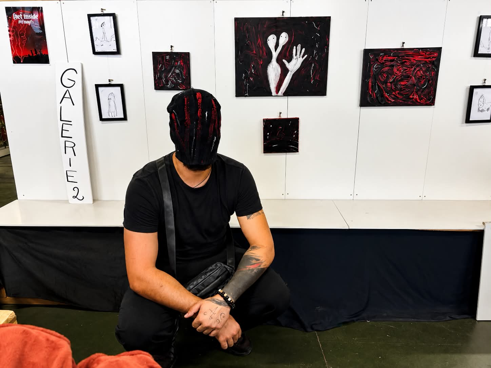
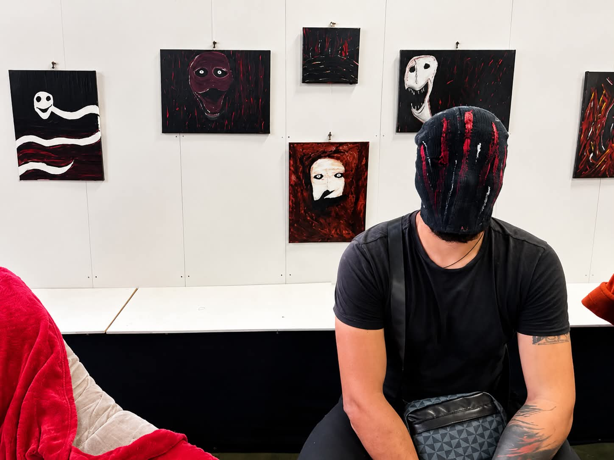
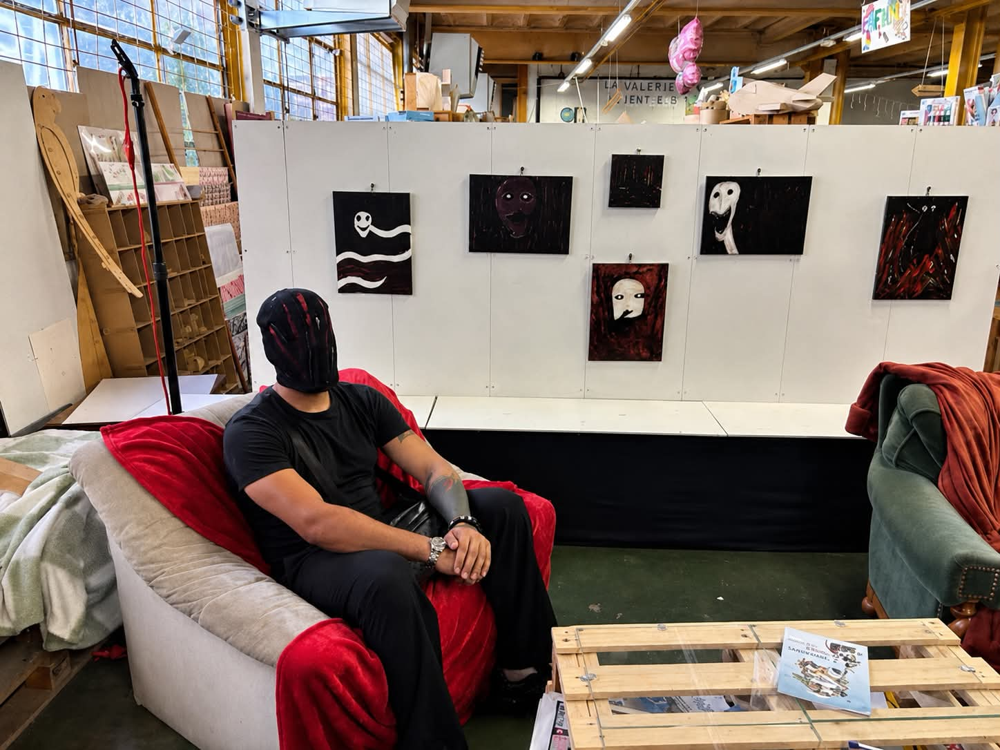

Exposition
Quel monde étrange...
Une collection née d'un univers sombre, étrange et organique, où les créatures et les formes prennent vie sur la toile.
L'Art des Choix — Annonay
Quel monde étrange...
Ma collection présentée à la galerie L'Art des Choix, 8 Quai de Merle, 07100 Annonay.



En images
L'exposition en vidéo
Quelques images prises pendant l'exposition, pour découvrir les œuvres dans leur environnement.
Vidéo de l'exposition
Vidéo de l'exposition